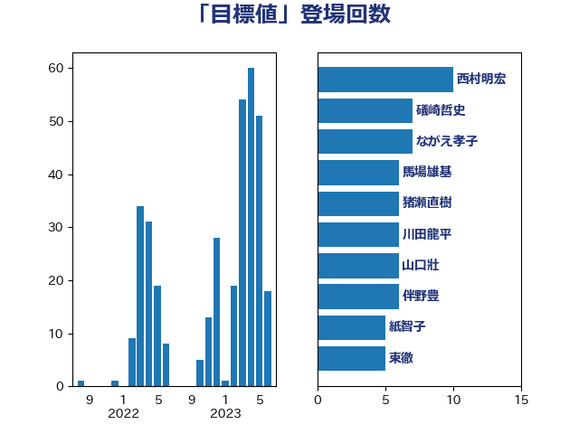

単語「目標値」

| 西村明宏 | 自由民主党 | 10 回 |
| 礒崎哲史 | 国民民主党 | 7 回 |
| ながえ孝子 | 無所属 | 7 回 |
| 馬場雄基 | 立憲民主党 | 6 回 |
| 猪瀬直樹 | 日本維新の会 | 6 回 |
| 川田龍平 | 立憲民主党 | 6 回 |
| 山口壯 | 自由民主党 | 6 回 |
| 伴野豊 | 立憲民主党 | 6 回 |
| 紙智子 | 日本共産党 | 5 回 |
| 東徹 | 日本維新の会 | 5 回 |
| 加藤勝信 | 自由民主党 | 5 回 |
| 仁比聡平 | 日本共産党 | 5 回 |
| 舩後靖彦 | れいわ新選組 | 4 回 |
| 石垣のりこ | 立憲民主党 | 4 回 |
| 梅谷守 | 立憲民主党 | 4 回 |
| 岡田直樹 | 自由民主党 | 4 回 |
| 小林茂樹 | 自由民主党 | 4 回 |
| 奥下剛光 | 日本維新の会 | 4 回 |
| 堂込麻紀子 | 無所属 | 4 回 |
| 石井苗子 | 日本維新の会 | 3 回 |
| 本庄知史 | 立憲民主党 | 3 回 |
| 後藤茂之 | 自由民主党 | 3 回 |
| 太栄志 | 立憲民主党 | 3 回 |
| 堤かなめ | 立憲民主党 | 3 回 |
| 住吉寛紀 | 日本維新の会 | 3 回 |
| 中島克仁 | 立憲民主党 | 3 回 |
| 阿部知子 | 立憲民主党 | 2 回 |
| 金子道仁 | 日本維新の会 | 2 回 |
| 赤嶺政賢 | 日本共産党 | 2 回 |
| 西銘恒三郎 | 自由民主党 | 2 回 |
| 西村康稔 | 自由民主党 | 2 回 |
| 萩生田光一 | 自由民主党 | 2 回 |
| 畦元将吾 | 自由民主党 | 2 回 |
| 田嶋要 | 立憲民主党 | 2 回 |
| 田中健 | 国民民主党 | 2 回 |
| 森屋隆 | 立憲民主党 | 2 回 |
| 柳本顕 | 自由民主党 | 2 回 |
| 松野明美 | 日本維新の会 | 2 回 |
| 掘井健智 | 日本維新の会 | 2 回 |
| 山田勝彦 | 立憲民主党 | 2 回 |
| 山下芳生 | 日本共産党 | 2 回 |
| 小野泰輔 | 日本維新の会 | 2 回 |
| 小熊慎司 | 立憲民主党 | 2 回 |
| 寺田静 | 無所属 | 2 回 |
| 坂本祐之輔 | 立憲民主党 | 2 回 |
| 保岡宏武 | 自由民主党 | 2 回 |
| 齋藤健 | 自由民主党 | 1 回 |
| 高木かおり | 日本維新の会 | 1 回 |
| 音喜多駿 | 日本維新の会 | 1 回 |
| 青柳仁士 | 日本維新の会 | 1 回 |
| 青島健太 | 日本維新の会 | 1 回 |
| 阿部司 | 日本維新の会 | 1 回 |
| 長友慎治 | 国民民主党 | 1 回 |
| 野間健 | 立憲民主党 | 1 回 |
| 野田聖子 | 自由民主党 | 1 回 |
| 野田国義 | 立憲民主党 | 1 回 |
| 野村哲郎 | 自由民主党 | 1 回 |
| 近藤昭一 | 立憲民主党 | 1 回 |
| 若林健太 | 自由民主党 | 1 回 |
| 若松謙維 | 公明党 | 1 回 |
| 自見はなこ | 自由民主党 | 1 回 |
| 緑川貴士 | 立憲民主党 | 1 回 |
| 細田健一 | 自由民主党 | 1 回 |
| 米山隆一 | 立憲民主党 | 1 回 |
| 稲津久 | 公明党 | 1 回 |
| 稲富修二 | 立憲民主党 | 1 回 |
| 福重隆浩 | 公明党 | 1 回 |
| 福田昭夫 | 立憲民主党 | 1 回 |
| 神谷政幸 | 自由民主党 | 1 回 |
| 神津たけし | 立憲民主党 | 1 回 |
| 石井章 | 日本維新の会 | 1 回 |
| 田畑裕明 | 自由民主党 | 1 回 |
| 田村貴昭 | 日本共産党 | 1 回 |
| 田村憲久 | 自由民主党 | 1 回 |
| 牧島かれん | 自由民主党 | 1 回 |
| 渡辺孝一 | 自由民主党 | 1 回 |
| 池下卓 | 日本維新の会 | 1 回 |
| 永岡桂子 | 自由民主党 | 1 回 |
| 武村展英 | 自由民主党 | 1 回 |
| 櫻井周 | 立憲民主党 | 1 回 |
| 松野博一 | 自由民主党 | 1 回 |
| 松本剛明 | 自由民主党 | 1 回 |
| 東国幹 | 自由民主党 | 1 回 |
| 末次精一 | 立憲民主党 | 1 回 |
| 朝日健太郎 | 自由民主党 | 1 回 |
| 新妻秀規 | 公明党 | 1 回 |
| 新垣邦男 | 立憲民主党 | 1 回 |
| 斉藤鉄夫 | 公明党 | 1 回 |
| 打越さく良 | 立憲民主党 | 1 回 |
| 庄子賢一 | 公明党 | 1 回 |
| 平山佐知子 | 無所属 | 1 回 |
| 工藤彰三 | 自由民主党 | 1 回 |
| 岸田文雄 | 自由民主党 | 1 回 |
| 山田美樹 | 自由民主党 | 1 回 |
| 小倉將信 | 自由民主党 | 1 回 |
| 宮本徹 | 日本共産党 | 1 回 |
| 室井邦彦 | 日本維新の会 | 1 回 |
| 塩田博昭 | 公明党 | 1 回 |
| 土田慎 | 自由民主党 | 1 回 |
| 嘉田由紀子 | 無所属 | 1 回 |
| 佐藤正久 | 自由民主党 | 1 回 |
| 伊東信久 | 日本維新の会 | 1 回 |
| 伊佐進一 | 公明党 | 1 回 |
| 中田宏 | 自由民主党 | 1 回 |
| 中川貴元 | 自由民主党 | 1 回 |
| 三上えり | 立憲民主党 | 1 回 |
| 一谷勇一郎 | 日本維新の会 | 1 回 |
| おおつき紅葉 | 立憲民主党 | 1 回 |